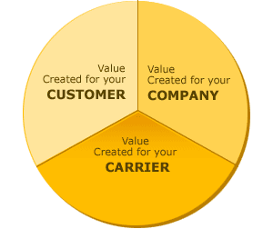

Application Branding & Iconography
No Description
Branding Guidelines
Brand statement to be written by Bob Stroher
iHeartRadio apps should be closely associated with the iHeartRadio brand. It is important that the brand be handeled consistently across platforms wherever possible. Some platform vendors and some form factors will not allow for a consistent application of the identity. In these cases you may propose a different handling of the brand.
Handeling of the iHeartRadio Identity
Where possible, the iHeartRadio logo should be visible in it's entirety at all times. On platforms that do not afford enough screen real estate, the 'heart' logomark can be used as both a navigation item and a persistent branding element. When the 'heart' logomark is used as a navigation element, it should take the user back to a home screen or start screen.
It is preferable that the logo be displayed in white on a red background, however some platforms do not allow for this so exceptions can be made. If the logo is not displayed on a red background, you should use the red, black and grey version.


Find or Create
In addition to the logo, the brand of iHeartRadio is communicated around the phrase "Find or Create". Try to incorporate this phrase into the navigation of the app. This is an example of the Web App
Software Marketplace
Where the platform guidelines permit, the approved iHeartRadio app-icon should be used.

Branding Examples
Insert examples here
Iconography

- Home — The navigational icon for home should be the iHeartRadio 'heart' logomark
Home
The navigational icon for home should be the iHeartRadio 'heart' logomark
Find
The navigational icon for Find is under development
Create
Any time an icon is used to represent the act of creating a custom station.
Search
The search icon should always be a right handed magnifying glass while the platform permits
Publish to Facebook
The users "Publish to Facebook Timeline" status should be visable in the player
Skip
The skip icon should always use the standard skip symbol. The precise form of this may vary
Share
This icon should be used for the share function
Stations Near You
This icon can be used as a navigation element to represent stations near the users location
My Stations
This icon that represents the users collection of stations including recently played.
Buy Song
The icon for purchasing a song should always be the "download" symbol and never the "dollar" symbol
Song Lyrics
Users can view the lyrics of currently or previously played songs.
This icon is pending changes
Featured Stations
This icon can be used to represent collections of featured stations that contain both Custom Artist Stations and iHeartRadio Originals.
This icon is pending development
iHeartRadio Originals
This icon represents non-terrestrial stations that are comprised of hand-picked playlists
This icon is pending development
Custom Talk
This icon is pending development
Supergenre - Music & Entertainment
An icon that represents a set of genres including music, comedy and personalities
This icon is pending development
Supergenre - Talk Radio
An icon that represents a set of genres including News & Talk, Sports, Public Radio
This icon is pending development
Featured Artist Stations
An icon that represents a location that shows featured artist stations.
This icon is pending development
Settings/Options
An icon that represents a location for changing settings.
This icon is pending Development
Featured Artist Stations
An icon that represents a location that shows featured artist stations.
This icon is pending development
Stations By Location
An icon that represents the ability to browse for stations based on their city and/or state.
This icon is pending development
- Definition for icon goes here — Icons should be 50px wide for consistency, height can vary. Sed ut perspiciatis unde omnis iste natus error sit voluptatem accusantium doloremque laudantium, totam rem aperiam, eaque ipsa quae ab illo
- Definition for icon goes here — Icons should be 50px wide for consistency, height can vary. Sed ut perspiciatis unde omnis iste natus error sit voluptatem accusantium doloremque laudantium, totam rem aperiam, eaque ipsa quae ab illo

- Definition for icon goes here — Icons should be 50px wide for consistency, height can vary. Sed ut perspiciatis unde omnis iste natus error sit voluptatem accusantium doloremque laudantium, totam rem aperiam, eaque ipsa quae ab illo